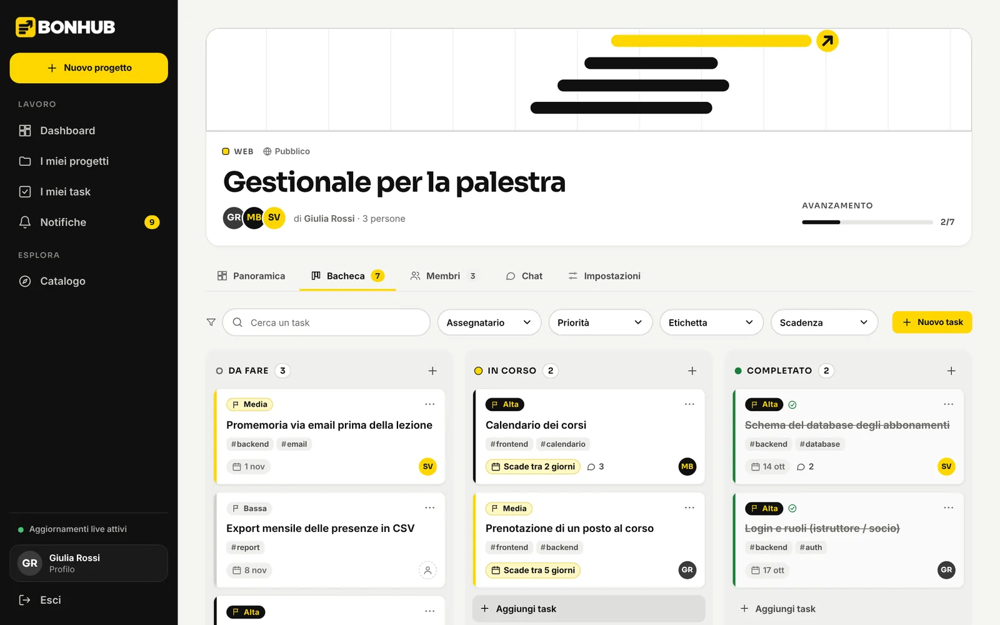

Account e ruoli
Registrazione, accesso e logout con token JWT. Utente, proprietario di progetto e amministratore, con permessi controllati sul server.
Progetto d'esame · Node.js
BONHUB è una piattaforma per gestire progetti di squadra: bacheca a colonne, chat e notifiche che si aggiornano in tempo reale, catalogo pubblico dei progetti e un pannello di moderazione per gli amministratori.

Cosa fa
Ogni funzione passa da API REST protette in base al ruolo; il tempo reale avvisa gli altri solo dopo che il dato è stato salvato.
Registrazione, accesso e logout con token JWT. Utente, proprietario di progetto e amministratore, con permessi controllati sul server.
Progetti con categoria, tecnologie, visibilità e copertina. Catalogo pubblico con ricerca, filtri, ordinamento e paginazione.
Task con priorità, scadenza, assegnatario, etichette e commenti. Si spostano con il trascinamento o da tastiera e touch.
Bacheca, chat e notifiche si aggiornano da sole per tutti i membri, tramite Socket.IO.
Si entra in un progetto accettando un invito. Il proprietario invita, annulla, rimuove; ognuno può lasciare un progetto.
I tuoi task per scadenza, i progetti creati e quelli a cui partecipi, gli inviti in sospeso.
Segnalazioni live agli admin, progetti oscurabili, utenti bloccabili con effetto immediato.
Navigazione da tastiera, focus visibile, contrasti verificati con axe-core, movimento ridotto rispettato.
Schermate
Palette carbone, giallo e bianco; titoli in Sora, testi in Inter. Clicca un'immagine per ingrandirla.
Dashboard
Task in arrivo e in ritardo, progetti recenti con avanzamento e inviti da accettare, in una sola pagina.
Catalogo
Ricerca immediata, categorie a pillole, filtri per tecnologia e data, e copertine generate a partire dal marchio quando manca un'immagine.
Task
Stato, priorità, assegnatario e scadenza in una griglia ordinata; descrizione, etichette e commenti nello stesso posto.
Chat
Ogni progetto ha la sua chat: messaggi raggruppati, orari, stato della connessione live e cronologia a pagine.
Panoramica
Avanzamento, scadenze imminenti, informazioni e cronologia delle azioni di tutti i membri.
Amministrazione
Segnalazioni da esaminare, progetti da oscurare e utenti da bloccare, con azioni distruttive ben separate da quelle ordinarie.
Anche su smartphone
Architettura
Ogni modifica passa da una richiesta HTTP, viene validata, salvata e solo dopo annunciata agli altri. Se il canale live cade, alla riconnessione basta rileggere i dati.
React 19 + Vite. Contesti per sessione, notifiche e connessione live; token di design centralizzati.
Express 5: rotte → middleware di permessi → controller. Errori centralizzati con codici HTTP corretti.
Mongoose con schemi, indici e vincoli. Seed non distruttivo e migrazioni ripetibili.
Socket.IO · stanze per utente e per progetto: ogni evento arriva solo a chi ne fa parte, dopo il salvataggio.
Qualità
.env, nessun segreto nel repository| Livello | Tecnologie |
|---|---|
| Backend | Node.js 22 · Express 5 · Mongoose 9 · jsonwebtoken · bcryptjs · multer · Socket.IO 4 |
| Database | MongoDB 7 (anche via Docker Compose) |
| Frontend | React 19 · Vite 8 · React Router 7 · socket.io-client · font Sora e Inter (licenza OFL) |
| Test | Jest · Supertest · Newman (Postman) · Playwright · axe-core |
Avvio rapido
Questa pagina è una vetrina statica: l'applicazione completa richiede il backend Node.js e MongoDB, quindi si avvia sul proprio computer.
# serve Node.js 20.19+ e MongoDB acceso git clone https://github.com/BoninaBID2527/node-eseme-finale.git cd node-eseme-finale # terminale 1 · backend cd backend && npm install && cp .env.example .env npm run seed && npm run dev # terminale 2 · frontend → http://localhost:5173 cd frontend && npm install && npm run dev